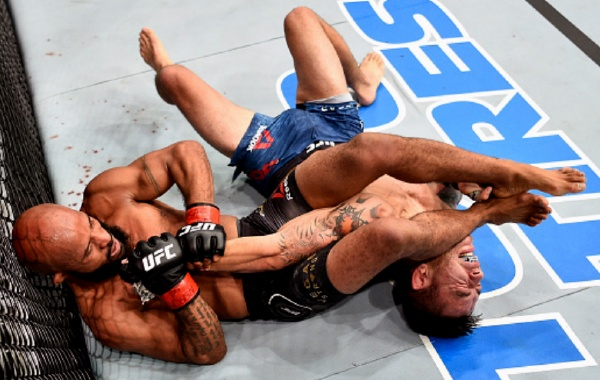
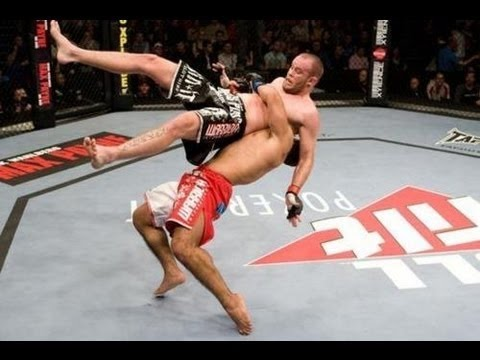
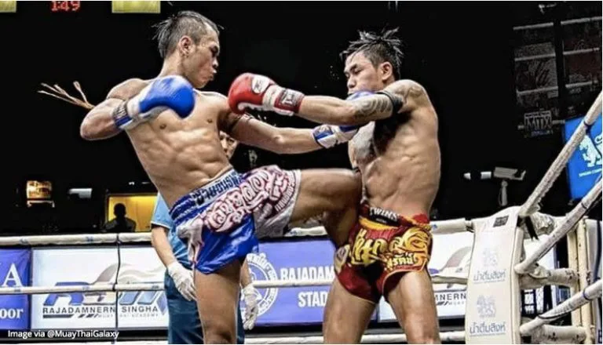
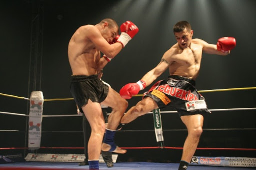
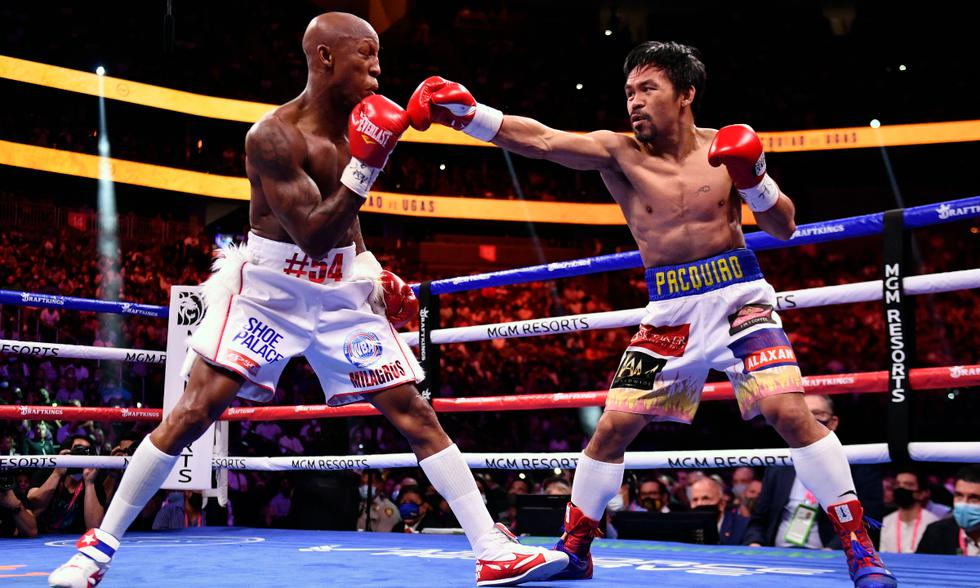
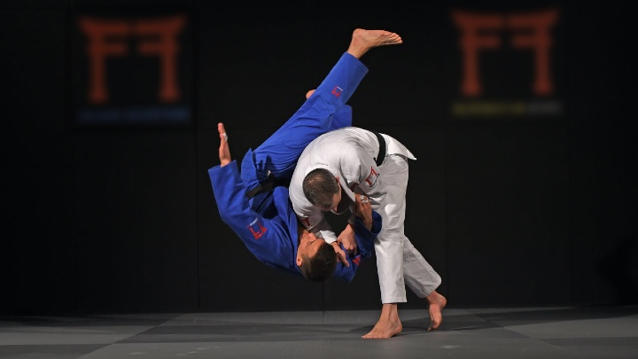
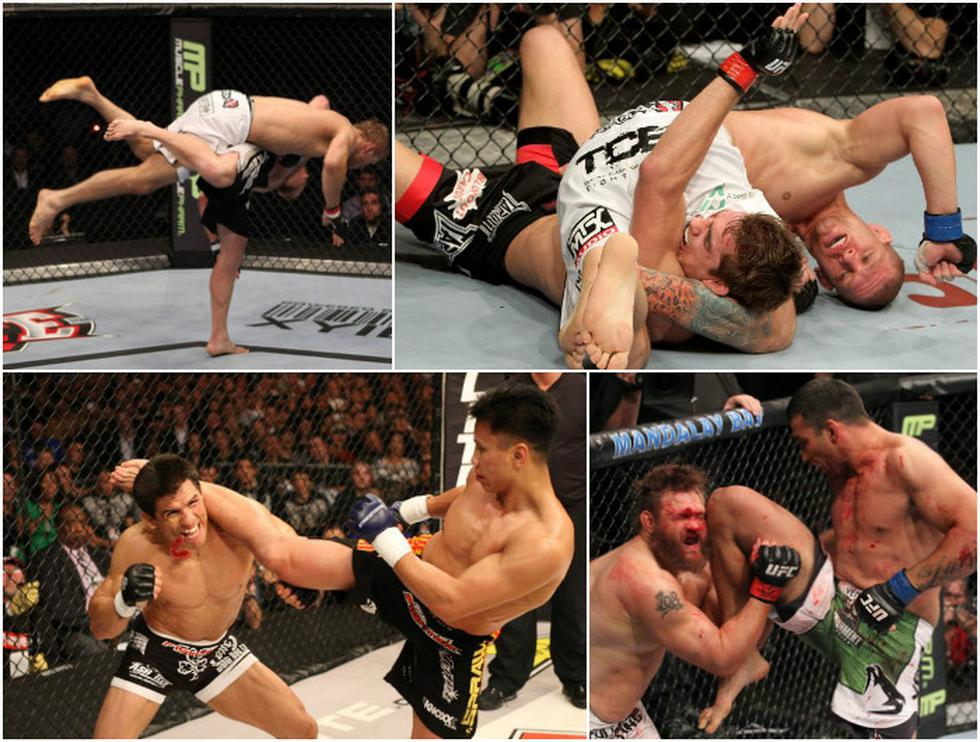

JIU-JITSU
Es un arte marcial de origen japonés llevado a Brasil. La idea es que un individuo pequeño pueda defenderse con éxito frente a un rival más grande y fuerte, gracias al uso eficaz de la técnica.
WRESTLING LUCHA
Es considerado uno de los deportes más antiguos sin origen preciso ya que todos los pueblos han tenido alguna forma de lucha. Cada participante intenta derrotar a sus rivales con el uso de llaves y técnicas de proyección.
MUAY THAI
Conocido también como boxeo tailandés o tradicionalmente como el arte de las 8 extremidades, es un deporte de contacto y se ha convertido en un símbolo nacional de Tailandia. Es considerado el deporte de lucha de pie más eficaz.
KICK BOXING
Es un deporte de combate de origen japonés y con desarrollo en occidente, en el cual se mezclan las técnicas del boxeo con las técnicas de patadas de algunas artes marciales como el karate y el muay thai.
BOXEO
Su origen es africano y la palabra boxeo comenzó a utilizarse en la Inglaterra del siglo XVII. Es un deporte de contacto en que dos contrincantes luchan utilizando únicamente sus puños con guantes, golpeando a su adversario de la cintura hacia arriba, dentro de un cuadrilátero en breves secuencias de lucha asaltos comunmente llamados.
JUDO
Es un arte marcial y deporte de combate de origen japonés, que permite una educación física integral. Actualmente su forma deportiva se ha especializado en los lanzamientos, con algunas poca sumisiones, luxaciones y estrangulaciones.
MMA
Las artes marciales mixtas (conocida frecuentemente por sus siglas en inglés MMA, de Mixed Martial Arts) son la combinación de técnicas provenientes de distintas artes marciales y deportes de combate, generalmente se usa para la competición en el deporte de combate pero también para la defensa personal.
